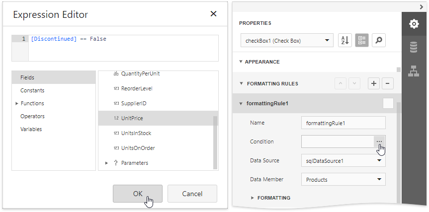
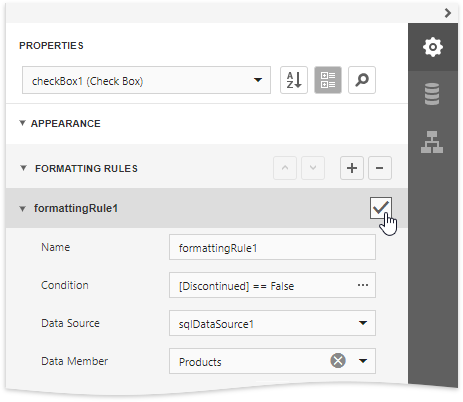

Conditionally Suppress Controls
This document describes how to display or hide a report control in a published document based on a specified logical condition.
Warning
Use the approach below if expression bindings are not enabled in the Report Designer (the Designer does not provide the Expressions panel).
See Conditionally Suppress Controls if expression bindings are enabled in the Report Designer (the Designer provides the Expressions panel).
Create a new report or open an existing one and prepare the report layout.
Select the required control and expand the Appearance category in the Properties panel. Select the Formatting rules node and click the plus button to add a new formatting rule.

Expand the Formatting node and set the Visible property to No. Click the Condition property's ellipsis button. In the invoked Expression Editor, specify the required visibility condition.

Enable the formatting rule's check box to apply the created formatting rule to the required control.

In this editor, you can also customize the precedence of formatting rules using the up and down arrow buttons on the right of the dialog box. The rules are applied in the same order that they appear in the list, and the last rule in the list has the highest priority.
When switching to Print Preview, you can view the report control's visibility changes according to the assigned condition.